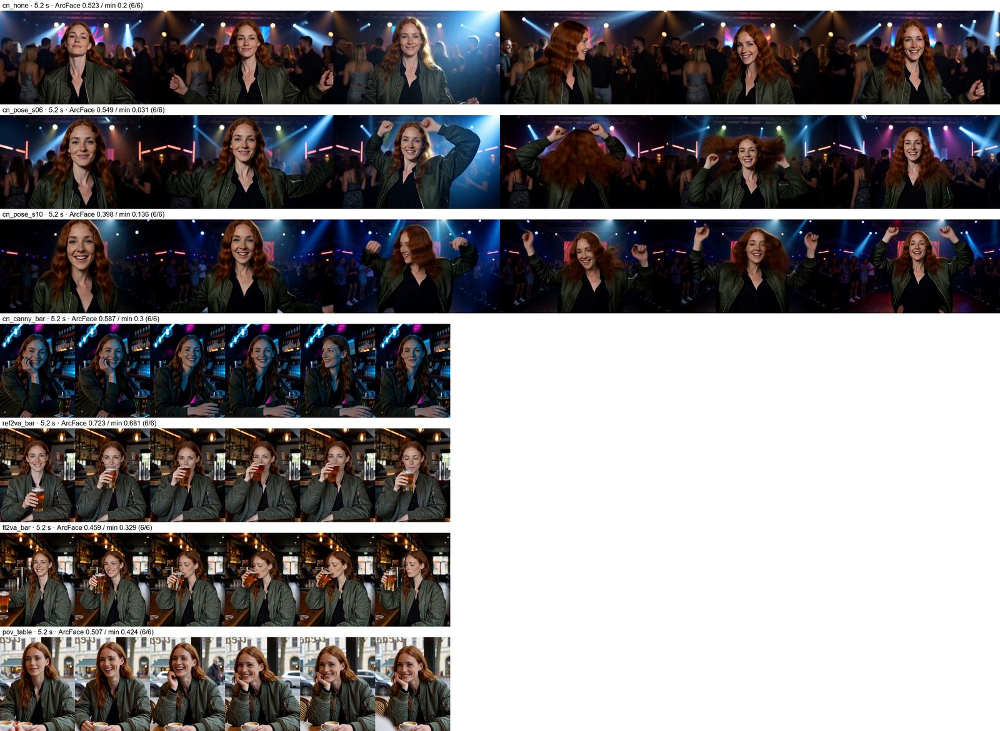
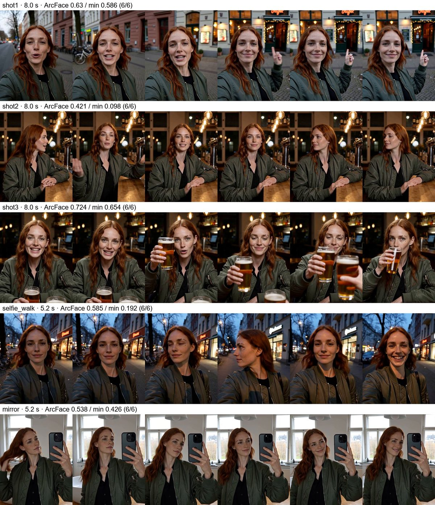

Как точнее управлять движением в H3: чужая поза, своя композиция в новом свете, POV и сцена из нескольких планов с одним персонажем.
Что значит «управлять движением»
Раскадровка по секундам говорит модели, что делать. Но иногда нужно точнее: повторить движения танцора, сохранить композицию готового клипа и поменять только свет, снять «от первого лица» или собрать сцену из нескольких планов с одним и тем же человеком. В серии 9 мы проверили четыре инструмента на H3 и одном персонаже, вымышленной Марен:
референсы личностиFL2VA или Ref2VAтри канонических вида лица вместо первого кадра
ControlNetFun Union 2.0скелет позы или контуры (canny) из чужого клипа
POVтолько текстселфи на вытянутой руке, взгляд друга, зеркало
мини-сцена3 плана × 8 ссклейка встык, один наряд, один голос
Считали на двух арендованных картах одновременно: RTX 5090 (POV и сцена) и RTX PRO 6000 (ControlNet и Ref2VA). Рецепт везде один: 30 шагов, shift 12, без SageAttention. ArcFace — сходство с эталонным фото Марен, среднее и минимум по 6 кадрам клипа.
Ref2VA держит лицо лучше FL2VA ЗАМЕР
У H3 два чекпойнта, которые читают референсы личности. FL2VA (первый и последний кадр + звук) у нас стоит локально, Ref2VA (Reference-to-Video + звук, 19,5 ГБ) — специализированный. Один и тот же промпт «бар, она пьёт пиво», те же три вида лица, тот же сид:
Чекпойнт
Время (PRO 6000)
ArcFace среднее / минимум
На глаз
Ref2VA
230 с
0,72 / 0,68
самое устойчивое лицо за всю ночь
FL2VA
206 с
0,46 / 0,33
та же сцена, сходство слабее
Для клипов, где лицо главное, — Ref2VA. Для повседневных — локальный FL2VA со стандартной нодой референсов (глава «Референс»): дешевле и без лишних 19,5 ГБ. ПРАВИЛО
Разница в 0,26 — больше, чем в серии 6b (≈ 0,10), где FL2VA выполнял поворот головы, а Ref2VA его пропускал. Сравнивайте чекпойнты на одной сцене и смотрите, выполнены ли действия.
ControlNet: повторить позу или сменить вид
Fun ControlNet-Union 2.0 для H3 принимает скелет позы (мы извлекали его SDPose) или контуры кадра (canny). Сила управления — главная ручка: чем она выше, тем точнее движение и тем меньше модели остаётся на лицо.
Вариант
Время
ArcFace среднее / мин
На глаз
без ControlNet, танец в клубе 1024×576
146 с
0,52 / 0,20
свободный танец
поза, сила 0,6
178 с
0,55 / 0,03
частично повторяет движения рук, лицо держится
поза, сила 1,0
276 с
0,40 / 0,14
точно повторяет руки (кулаки вверх), сходство падает
canny 0,8 из нашего клипа в баре → синий неон
304 с
0,59 / 0,30
композиция и движения те же, свет и вид новые

Сверху вниз: танец без ControlNet, поза 0,6, поза 1,0, canny-перекраска клипа из бара, Ref2VA и FL2VA на одной сцене, взгляд друга за столиком кафе. Над каждой строкой — длина клипа и ArcFace.
Поза — сила 0,6. 1,0 копирует движения, но стоит ≈ 0,15 ArcFace. ПРАВИЛО
Canny по своему клипу — способ перекрасить или пересветить сцену, сохранив мизансцену: кто где стоит и куда движется.
Источник позы важен. У танцовщицы из шаблона платье закрывает ноги, и SDPose нарисовал неполные скелеты. Берите клип, где тело видно целиком.
Минимумы ArcFace около нуля — это кадры с волосами на лице или со спины, а не другая личность. Проверяйте глазами.
Съёмка «от первого лица»
POV-кадры делали без управления, одним текстом и референсами личности. По 5 с, ≈ 6 минут на RTX 5090.
Кадр
ArcFace среднее / мин
Результат
селфи на вытянутой руке на прогулке
0,59 / 0,19
убедительно, с взглядом через плечо
взгляд друга за столиком кафе
0,51 / 0,42
хорошо; рука друга не появилась, только чашка
селфи в зеркале
0,54 / 0,43
не вышло: телефон в руке, но ни зеркала, ни отражения
Селфи и «взгляд друга» работают из текста.ЗАМЕР
Зеркальному селфи нужен явный бит: «we see her reflection in the mirror, the phone covers part of her face» — или первый кадр с зеркалом.
Мини-сцена из трёх планов
Влог «мой любимый бар в Кройцберге»: прогулка с разговором, заказ у стойки, тост. Три плана по 8 с на FL2VA с тремя видами лица. У каждого плана своя немецкая реплика: голос ElevenLabs, обработанный «под улицу и бар», вморожен в латент по рецепту из главы «Говорящий персонаж». Монтаж — переходы 0,4 с, зерно subtle_light (глава «Финиш»), громкость −16 LUFS.
Мини-сцена, 23 с. «Hallo ihr Lieben! Ich bin gerade in Kreuzberg…» → «Zwei Helle, bitte!» → «Ehrlich, das ist das beste Bier in ganz Berlin. Prost!»

Три плана и POV по кадрам. План 1 (788 с): 0,63 / 0,59, в конце она показывает на бар. План 2 (682 с): 0,42 / 0,10 — профиль у стойки занижает метрику, лицо то же. План 3 (687 с): 0,72 / 0,65, чокается с бокалом друга у края кадра. Ниже — селфи на прогулке и неудавшееся зеркало.
Непрерывность держат три вещи: склейка встык, одна строка наряда во всех промптах и одни и те же референсы. ПРАВИЛО
Голос на каждый план — свой трек, вмороженный в латент: реплики чистые, губы попадают.
Не больше двух действий на 5 с (серия 7): в 8-секундном плане — три-четыре бита.
Итог серии 9
Лицо персонажа: Ref2VA 0,72 против FL2VA 0,46 на одной сцене. Ref2VA — для главных клипов, локальный FL2VA с референсами — для остальных.
ControlNet позы — 0,6; canny по своему клипу — для пересвета и перекраски.
POV: селфи и взгляд друга — текстом; зеркало — только с явным битом про отражение.
Сцена из планов: склейка встык, один наряд, одни референсы, голос на каждый план.
Стоимость ночи вместе с серией 12 — около $5 за две карты (≈ 3 часа аренды).
Workflow с ControlNet ещё не собран в общий стиль: граф есть только в скрипте серии.